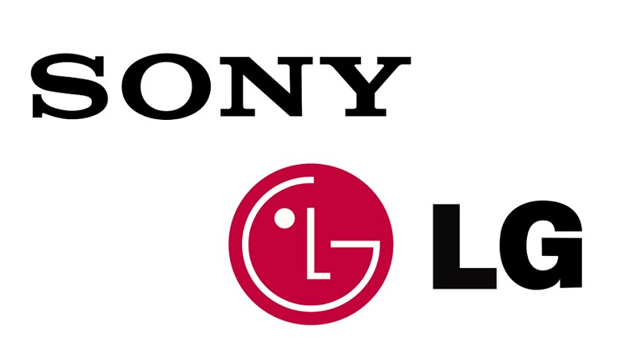
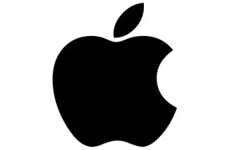
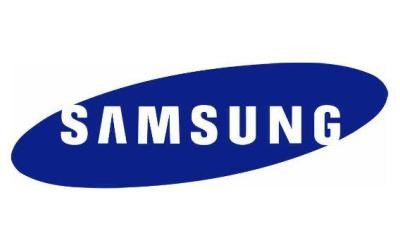
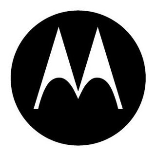
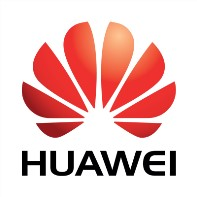
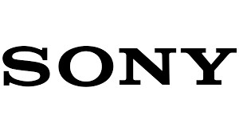

Sony
Es una empresa multinacional japonesa con sede en Tokio (Japón) y uno de los fabricantes más importantes a nivel mundial en electrónica de consumo: audio y vídeo, computación, fotografía, videojuegos, telefonía móvil, productos profesionales, etcétera. En 2019 Sony ocupó el puesto 116 en la lista Fortune Global 500, un escalafón de empresas de todo el mundo medidas por los ingresos. A comienzos del siglo XXI, Sony llegó a estar entre las treinta primeras de este listado en varias oportunidades. Durante décadas Akio Morita y Masaru Ibuka, los fundadores de Sony, formaron una pareja complementaria. Gracias al agudo sentido de las relaciones públicas y mercadotecnia de Morita y al espíritu de innovación de Ibuka, la compañía prosperó internacionalmente.
Desde entonces varios aportes de Sony al mundo de la electrónica han sido relevantes. Por ejemplo, en 1950 la empresa presentó la primera grabadora de sonido en Japón, cuatro años más tarde fabrica el primer transistor japonés y al año siguiente, en 1955 desarrolla la primera radio de transistores del mundo. En las décadas posteriores la empresa desarrolló productos como la serie de televisores Trinitron, el Betamax, el Walkman, el Disco Compacto, las Handycam o la PlayStation entre otros que dieron renombre mundial.
Entre la década de los Años 1980 y Años 1990, Sony era la empresa líder en el sector tecnológico y de las más importantes a nivel global. A juzgar por los resultados y la capitalización de mercado, Sony vivió su época de auge en 2000 bajo la dirección del presidente Nobuyuki Idei, logrando que sus acciones tuvieran el máximo de su historia en febrero del año 2000, al lograr un valor de 156 dólares por acción y logrando un valor de mercado de más de 150 mil millones de dólares, siendo en ese momento la empresa tecnológica más valiosa del mundo. En los Años 2010 PlayStation se consolidó como la división más rentable para Sony, seguida por Servicios financieros que engloban las financiaciones y otras actividades derivadas de la compañía. Por el contrario, la división Sony Mobile produciría pérdidas.
Marcas de Celulares
| MARCA | ¿QUÉ ES? | ¿CUÁNDO SE FUNDÓ? | LOGOTIPO |
|---|---|---|---|
Es una empresa estadounidense que diseña y produce equipos electrónicos, software y servicios en línea. |
1 de abril de 1976 |
 | |
Es un conglomerado de empresas multinacionales con sede en Seúl, Corea del Sur. Se trata del mayor grupo empresarial surcoreano, con numerosas filiales que abarcan negocios como la electrónica de consumo, tecnología, finanzas, aseguradoras, construcción, biotecnología y sector servicios. |
1 de marzo de 1938 |
 | |
Fue unos multinacionales de telecomunicaciones se fundó con sede en Schaumburg, Illinois. |
25 de septiembre de 1928 |
 | |
Es una empresa tecnológica multinacional china. Proporciona equipos de telecomunicaciones y vende electrónica de consumo, teléfonos inteligentes. |
En 1987 (33 años) |
 | |
Es una empresa multinacional japonesa con sede en Tokio (Japón) y uno de los fabricantes más importantes a nivel mundial en electrónica de consumo: audio y vídeo, computación, fotografía, videojuegos, telefonía móvil, productos profesionales, etcétera. |
7 de mayo de 1946 |
 | |